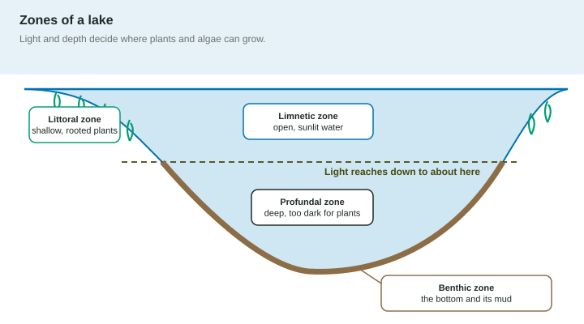

Water covers about 71% of Earth's surface, and it is not all the same. A cold mountain stream, a warm farm pond, a muddy river mouth and the deep sea are as different from each other as a desert is from a rainforest. On land, temperature and precipitation sort the biomes. In water, the sorting factors are different: salt, light, depth, temperature and oxygen.
The factors that sort aquatic biomes
- Salinity is the amount of dissolved salt. Freshwater is close to 0 parts per thousand (ppt); seawater is about 35 ppt. This is the first split: freshwater biomes versus marine biomes.
- Depth and light. Sunlight fades quickly as it passes through water. Only the top layer, the photic zone, gets enough light for algae and plants to make more food by photosynthesis than they use. Below it is the dark aphotic zone.
- Temperature affects how much gas water can hold and how fast organisms live.
- Dissolved oxygen (DO) is the oxygen gas dissolved in water, measured in mg/L. Fish and other animals take it in through their gills. Cold water holds more oxygen than warm water, and fast, splashing water mixes in more air than still water.
- Nutrients, such as nitrogen and phosphorus, which algae need to grow.
Freshwater biomes
Lakes and ponds are standing water, divided into zones by depth and light.

- The littoral zone is the shallow edge, where light reaches the bottom and rooted plants grow.
- The limnetic zone is the open, sunlit water away from shore, home to floating algae.
- The profundal zone is deep water below the reach of light; no photosynthesis happens there.
- The benthic zone is the bottom and its mud, where worms, insect larvae and bacteria break down dead matter that sinks.
Rivers and streams are moving water. Near their source they tend to be cold, fast and rich in oxygen. Farther down they get wider, warmer and slower and carry more sediment and nutrients.
Wetlands (marshes, swamps, bogs) are land covered by shallow water or soaked for at least part of the year. They act like sponges: they soak up floodwater and release it slowly, filter pollutants and sediment out of the water, and shelter many birds, fish and amphibians.
Marine biomes
| Biome | Conditions | Why it matters |
|---|---|---|
| Estuary | river meets sea; fresh and salt water mix (salinity in between) | nutrients from rivers and plenty of light: a nursery for young fish and shellfish |
| Salt marsh and mangrove forest | coastal; marsh grasses in temperate areas, salt-tolerant mangrove trees in the tropics | roots hold mud, protect shores from storms, shelter young fish |
| Intertidal zone | covered at high tide, exposed at low tide; waves | organisms must resist drying out and cling against waves (barnacles, mussels, sea stars) |
| Coral reef | warm, clear, shallow, low-nutrient tropical water | huge variety of species; corals depend on algae living inside them |
| Open ocean | deep water far from shore; only the surface is lit | covers most of Earth, but each square meter grows little because surface nutrients are scarce |
Ocean algae matter far beyond the sea: drifting in the sunlit surface of the open ocean, they make a large share of the oxygen in the air we breathe. Where fish live in the ocean also depends on salinity, depth, temperature, nutrients and turbidity (how cloudy the water is), which is why fishing grounds are not spread evenly.
Coral reefs show how abiotic factors and species interactions work together. A coral is an animal, but tiny algae live inside its tissues. The algae make food from sunlight and share it; the coral gives them shelter and nutrients. That mutualism is why reefs need clear, shallow water: the algae need light.
Why temperature and oxygen go together
Worked example. A mountain stream at 8 °C has 11.5 mg/L of dissolved oxygen. A slow river at 24 °C has 6.0 mg/L. How much more oxygen does the stream hold? Subtract: mg/L. Why? Warmer water holds less dissolved gas (a warm soda goes flat faster than a cold one), and slow water mixes in less air. So the chain is: temperature rises, dissolved oxygen falls, fish have less oxygen to use.
Fish that need a lot of oxygen, such as trout, live in cold, fast streams; carp and catfish can survive in warmer, slower water. This link between temperature and oxygen will come back whenever water is heated or slowed down.
Light, mud and depth
Anything that clouds the water, such as mud washed in after a storm, blocks light. The photic zone gets shallower, and fewer algae and rooted plants can grow in deep water. Clear water lets light reach farther down, which is why coral reefs form only in clear water.